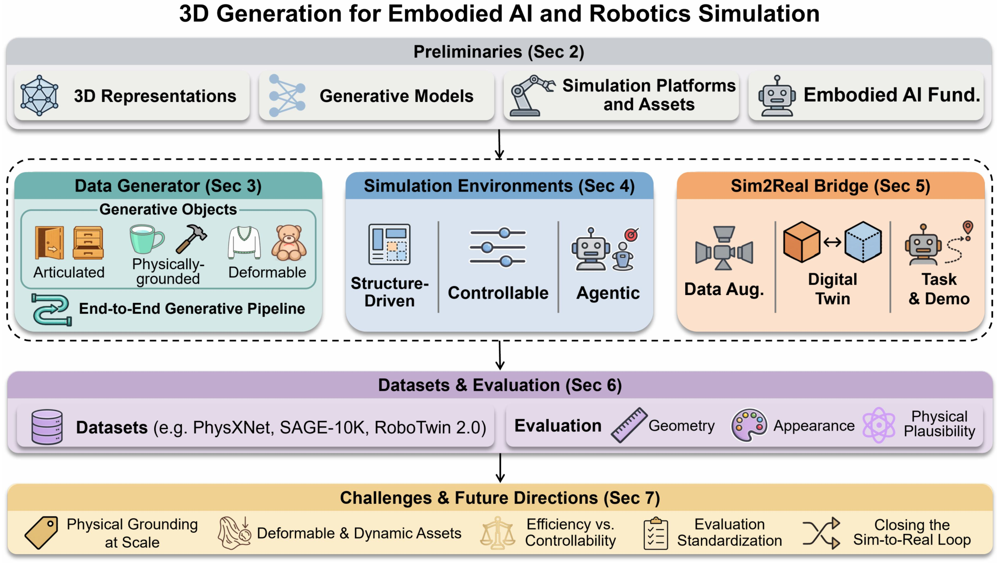
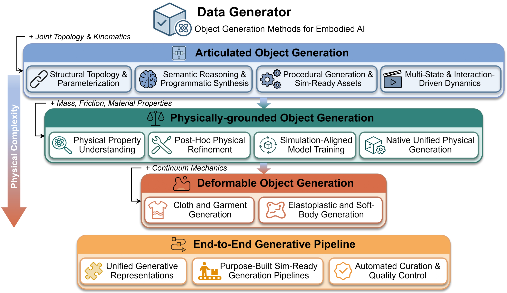
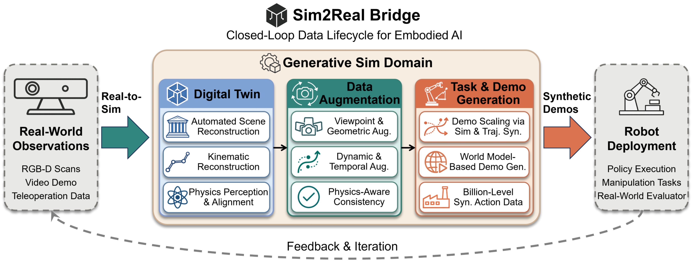

Survey overview and motivation.
Introduction
Embodied AI and robotic systems are increasingly expected to perceive, reason, and act in open-ended physical environments. However, their performance remains fundamentally constrained by the availability of scalable, diverse, and interaction-ready 3D assets. Unlike conventional 3D generation that prioritizes appearance realism, embodied applications require assets that can be manipulated, simulated, and transferred across tasks; a cabinet is useful because its doors rotate around plausible joints, a cloth is valuable because it deforms under contact, and a scene is effective because it supports navigation and task execution under physical constraints. This survey presents the first structured review organized around three roles that 3D generation plays in embodied AI: Data Generator (creating simulation-ready objects), Simulation Environments (building interactive worlds), and Sim2Real Bridge (connecting simulation to real-world deployment). We establish simulation readiness as the central evaluation criterion, encompassing physical validity, kinematic executability, and simulator compatibility, and reframe 3D generation as an infrastructure problem for embodied AI rather than merely a visual content synthesis task.Taxonomy
We organize this survey taxonomy around three complementary roles that 3D generation plays in embodied AI:
Data Generator, Simulation Environments, and
Sim2Real Bridge. Together, they capture the pipeline from simulation-ready asset creation,
to executable world construction, to transfer-oriented reconstruction and augmentation for real-world deployment.
Data Generator | Simulation-ready 3D Assets
Data Generator examines how generative models produce simulation-ready objects deployable in physics
engines without manual post-processing. The central challenge is not visual plausibility but
physical deployability: generated assets must carry kinematic constraints, material attributes,
and simulator-compatible formats (URDF/MJCF) alongside geometry. We organize methods by physical complexity:
Articulated Objects (joint topology and kinematics),
Physically-grounded Objects (mass, friction, material properties),
Deformable Objects (continuum mechanics for cloth and soft bodies), and
End-to-End Pipelines (automated sim-ready workflows). Two broad trends emerge:
learning-based methods (diffusion, autoregressive, GNN) achieving high geometric fidelity but
depending on scarce physically annotated data, and LLM/VLM-based methods leveraging semantic reasoning
for open-vocabulary generalization.

Overview of simulation-ready object generation pipelines.
Simulation Environments
Simulation Environments examines how generative models produce executable interactive worlds for
embodied agent training. The central challenge shifts from isolated asset creation to scene-level composition
that supports perception, navigation, and manipulation. We organize methods by control granularity:
Structure-Driven Generation (procedural rules or learned layout priors),
Controllable Generation (instruction, vision, or physics conditioning), and
Agentic Generation (foundation-model planning with self-correction and simulation feedback).
Early methods rely on hand-crafted rules or learned distributions over layouts, while controllable methods
introduce flexible conditioning signals. The most recent direction employs agentic pipelines that translate
high-level intent into structured specifications and continuously correct semantic and physical mismatches
through tool use and feedback, improving robustness over single-pass generation.

Scene generation from structure-driven to agentic pipelines.
Sim2Real Bridge | Transfer-oriented Pipelines
Sim2Real Bridge examines how generative 3D representations support the closed-loop data lifecycle connecting
simulation to real-world deployment. Unlike previous sections that focus on generating new assets or
composing interactive environments, this section targets
instance-level reconstruction and augmentation of specific real-world content. We organize
methods along three sequential stages: Digital Twin (constructing physically faithful replicas
from real-world observations), Data Augmentation (synthesizing 3D-grounded observations via
viewpoint, geometric, and temporal augmentation), and Task & Demo Generation (scaling
task-relevant demonstrations through simulation and generative models). The key distinction is that these
methods reconstruct and augment specific real-world instances rather than generating novel
category-level assets, creating a feedback loop where real-world observations feed into simulation, and
simulation-generated data trains policies for real-world deployment.

Transfer-oriented pipelines for digital twins, augmentation, and demonstrations.
Example
Example content is not finalized yet. This section is reserved for a future teaser video, interactive visual examples, or a compact walkthrough of the survey taxonomy.
Example placeholder
Replace this block with a video embed, interactive figure, or curated example gallery.
Replace this block with a video embed, interactive figure, or curated example gallery.
Collections
This section is reserved for curated collections such as paper lists, categorized resources, benchmarks, datasets, or external project links.
Collections placeholder
Replace this block with curated resources, tables, links, or filtering widgets.
Replace this block with curated resources, tables, links, or filtering widgets.
Datasets & Evaluation
Datasets & Evaluation surveys the benchmark landscape for embodied 3D generation across three categories:
Object Asset Datasets (from early geometric datasets like ShapeNet/PartNet to recent
physics-annotated collections like PhysXNet and PhysX-Mobility), Scene Datasets (from source
scans like 3D-FRONT and HM3D to procedurally generated environments like ProcTHOR-10K and agentically
constructed SAGE-10K), and Robot Demonstration Datasets (real-world corpora like
Open X-Embodiment and DROID, simulation benchmarks like RoboTwin and ManiSkill, and augmentation systems like
MimicGen). Evaluation spans three levels: geometry and appearance quality (Chamfer Distance,
F-Score, watertight ratio), physical plausibility and sim-readiness (stability rate, joint
accuracy, collision-free ratio, material error), and embodied task performance (grasp success
rate, navigation SPL, sim-to-real transfer rate).

Representative datasets and evaluation axes for embodied 3D generation.
Open Challenges & Future Directions
1. Physical Grounding at Scale
Challenge: Large-scale repositories like Objaverse provide millions of geometric models but lack material properties and kinematic parameters. Physically annotated datasets are orders of magnitude smaller, capping model generalization. Most generative architectures optimize visual metrics with no awareness of physics; non-manifold surfaces and thin structures may render well but be unusable in simulation.
Future Directions: (1) LLM/VLM-assisted labeling and self-supervised physical annotation via differentiable simulators; (2) integrating differentiable physics constraints into training loops, as demonstrated by DSO and PhysPart; (3) lightweight proxy validators that reject physically implausible outputs at generation time without full simulator rollouts.
Challenge: Large-scale repositories like Objaverse provide millions of geometric models but lack material properties and kinematic parameters. Physically annotated datasets are orders of magnitude smaller, capping model generalization. Most generative architectures optimize visual metrics with no awareness of physics; non-manifold surfaces and thin structures may render well but be unusable in simulation.
Future Directions: (1) LLM/VLM-assisted labeling and self-supervised physical annotation via differentiable simulators; (2) integrating differentiable physics constraints into training loops, as demonstrated by DSO and PhysPart; (3) lightweight proxy validators that reject physically implausible outputs at generation time without full simulator rollouts.
2. Deformable and Dynamic Asset Generation
Challenge: Deformable objects (cloth, ropes, soft bodies) are central to manipulation but remain less mature due to high-dimensional geometry and reliance on continuum mechanics (FEM, MPM, PBD). Key gaps include the absence of large-scale datasets with material annotations, the speed-fidelity tension between solvers and training, and a representation mismatch between outputs (meshes/Gaussians) and particle-based discretizations.
Future Directions: Discover simulation-native intermediate representations analogous to sewing patterns for garments, such as material point clouds annotated with constitutive parameters, that are both generatable and directly consumable by soft-body solvers, unlocking scalable deformable asset generation beyond garments.
Challenge: Deformable objects (cloth, ropes, soft bodies) are central to manipulation but remain less mature due to high-dimensional geometry and reliance on continuum mechanics (FEM, MPM, PBD). Key gaps include the absence of large-scale datasets with material annotations, the speed-fidelity tension between solvers and training, and a representation mismatch between outputs (meshes/Gaussians) and particle-based discretizations.
Future Directions: Discover simulation-native intermediate representations analogous to sewing patterns for garments, such as material point clouds annotated with constitutive parameters, that are both generatable and directly consumable by soft-body solvers, unlocking scalable deformable asset generation beyond garments.
3. Efficiency-Controllability Trade-off in Scene Generation
Challenge: Learning-based synthesis is efficient but struggles with semantic consistency, while agentic approaches achieve stronger alignment through iterative LLM-driven refinement at substantial computational cost, making them impractical for large-scale training.
Future Directions: (1) Amortized verification: replace full physics simulation with lightweight learned critics (as in SAGE); (2) Hierarchical generation: use efficient diffusion models for coarse layouts, then restrict agentic refinement to task-critical regions, concentrating computation where it matters most.
Challenge: Learning-based synthesis is efficient but struggles with semantic consistency, while agentic approaches achieve stronger alignment through iterative LLM-driven refinement at substantial computational cost, making them impractical for large-scale training.
Future Directions: (1) Amortized verification: replace full physics simulation with lightweight learned critics (as in SAGE); (2) Hierarchical generation: use efficient diffusion models for coarse layouts, then restrict agentic refinement to task-critical regions, concentrating computation where it matters most.
4. Evaluation Standardization
Challenge: Evaluation protocols remain fragmented. Geometric metrics ignore physical validity, physical metrics are adopted inconsistently, and downstream task evaluation depends on simulator choices. A model validated in MuJoCo may behave differently in Isaac Sim.
Future Directions: Establish a three-level standardized protocol: (1) Format validity: asset loads without crashes; (2) Physics plausibility: simulator-agnostic metrics such as stability rate and penetration volume; (3) Downstream performance: success rates under fixed policy configuration. Add cross-simulator consistency tests to expose solver-dependent artifacts.
Challenge: Evaluation protocols remain fragmented. Geometric metrics ignore physical validity, physical metrics are adopted inconsistently, and downstream task evaluation depends on simulator choices. A model validated in MuJoCo may behave differently in Isaac Sim.
Future Directions: Establish a three-level standardized protocol: (1) Format validity: asset loads without crashes; (2) Physics plausibility: simulator-agnostic metrics such as stability rate and penetration volume; (3) Downstream performance: success rates under fixed policy configuration. Add cross-simulator consistency tests to expose solver-dependent artifacts.
5. Closing the Sim-to-Real Loop
Challenge: The sim-to-real gap persists across appearance gap (lighting, sensor noise), dynamics gap (contact forces, material properties), and semantic gap (object arrangement, clutter). The field's primary limitation is fragmentation: generative models, physics engines, and policy learning use incompatible representations.
Future Directions: Develop unified foundation models jointly reasoning over geometry, physics, and task semantics. Early steps include representations like PhysGaussian (primitives serving both rendering and simulation) and pipelines like EmbodiedGen and PhysX-Anything that jointly produce geometry, kinematics, and physics from single inputs. Adaptive digital twin frameworks that continuously update simulation from real interaction data also point toward closing the loop.
Challenge: The sim-to-real gap persists across appearance gap (lighting, sensor noise), dynamics gap (contact forces, material properties), and semantic gap (object arrangement, clutter). The field's primary limitation is fragmentation: generative models, physics engines, and policy learning use incompatible representations.
Future Directions: Develop unified foundation models jointly reasoning over geometry, physics, and task semantics. Early steps include representations like PhysGaussian (primitives serving both rendering and simulation) and pipelines like EmbodiedGen and PhysX-Anything that jointly produce geometry, kinematics, and physics from single inputs. Adaptive digital twin frameworks that continuously update simulation from real interaction data also point toward closing the loop.
Conclusion
This survey presented a simulation-centric review of 3D generation for embodied AI and robotic simulation. We
organized the field around three roles that 3D generation now plays in embodied systems: Data
Generator, where generation produces simulation-ready objects and assets;
Simulation Environments, where generation builds interactive and task-oriented worlds; and
Sim2Real Bridge, where generation supports real-world transfer through digital twins, data
augmentation, and synthetic demonstrations. Across these three roles, a consistent trend emerges: the goal of
3D generation has shifted from visual plausibility toward simulation readiness, encompassing physical
grounding, kinematic executability, semantic controllability, and simulator format compatibility, and
generation is becoming a core infrastructure layer for embodied learning, integrating asset creation, quality
control, physical annotation, and downstream deployment into increasingly automated pipelines.
Several critical challenges remain. The scarcity of large-scale physical annotations limits the generalization of physically grounded generators. The gap between geometric realism and simulator deployability persists, as most generative architectures lack internal representations of physical validity. Deformable and dynamic asset generation lags substantially behind rigid-body modeling. Scene generation faces a fundamental trade-off between the efficiency of learning-based methods and the semantic controllability of agentic approaches. Evaluation standards remain fragmented across simulators and tasks, hindering reproducible cross-method comparison. The persistent sim-to-real gap spanning appearance, dynamics, and semantics continues to limit real-world deployment. Most fundamentally, the current ecosystem remains modular and disjoint: generative models, physics engines, and robot learning systems are optimized separately and connected through brittle format conversion pipelines.
Looking forward, we expect these three roles to become more tightly integrated, converging toward unified generation-simulation foundations that jointly model geometry, physics, and task semantics within shared representations. As embodied agents move toward open-world operation, the ability to generate assets, environments, and transfer-oriented training signals within one coherent pipeline will become a foundational capability rather than a supporting tool.
Several critical challenges remain. The scarcity of large-scale physical annotations limits the generalization of physically grounded generators. The gap between geometric realism and simulator deployability persists, as most generative architectures lack internal representations of physical validity. Deformable and dynamic asset generation lags substantially behind rigid-body modeling. Scene generation faces a fundamental trade-off between the efficiency of learning-based methods and the semantic controllability of agentic approaches. Evaluation standards remain fragmented across simulators and tasks, hindering reproducible cross-method comparison. The persistent sim-to-real gap spanning appearance, dynamics, and semantics continues to limit real-world deployment. Most fundamentally, the current ecosystem remains modular and disjoint: generative models, physics engines, and robot learning systems are optimized separately and connected through brittle format conversion pipelines.
Looking forward, we expect these three roles to become more tightly integrated, converging toward unified generation-simulation foundations that jointly model geometry, physics, and task semantics within shared representations. As embodied agents move toward open-world operation, the ability to generate assets, environments, and transfer-oriented training signals within one coherent pipeline will become a foundational capability rather than a supporting tool.
Citation
@misc{ye20263dgeneration,
title = {3D Generation for Embodied AI and Robotic Simulation: A Survey},
author = {To be updated},
year = {2026},
howpublished = {arXiv preprint},
note = {To be updated}
}